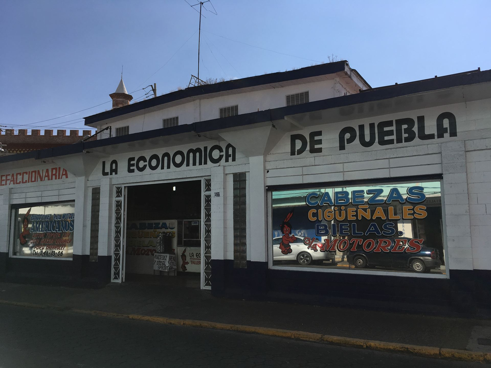
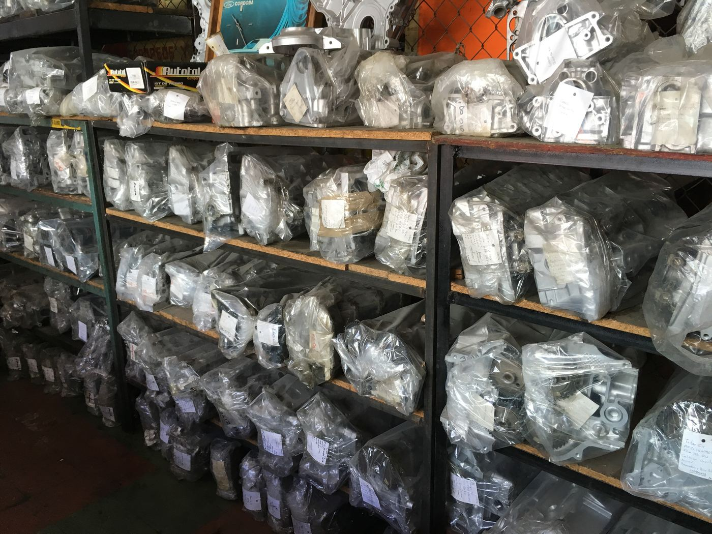
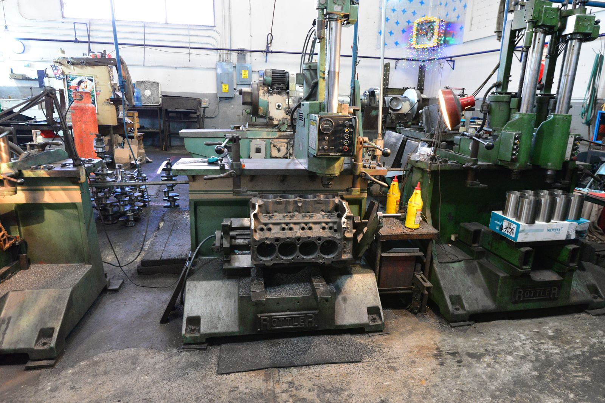
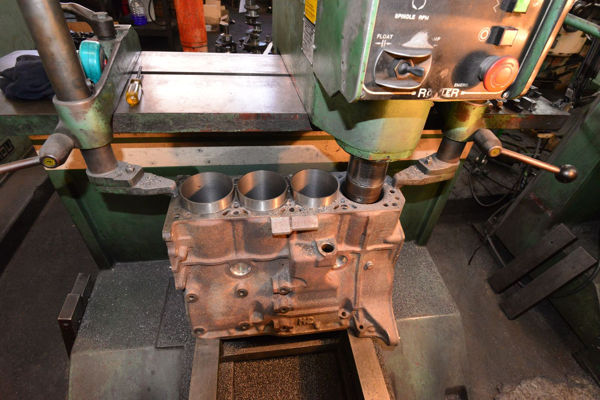
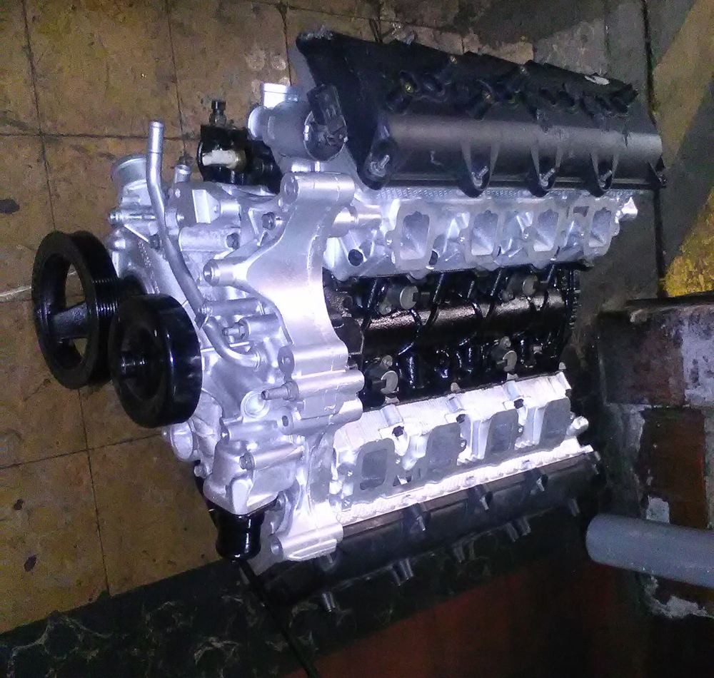
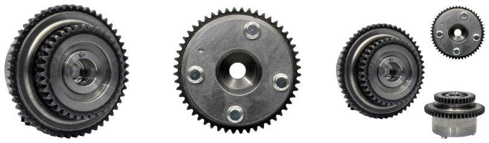

Donde los mecánicos que conocen, compran.
Refaccionaria y taller de rectificación de motores en Puebla desde 1934. Cabezas, cigüeñales y todo para el ajuste completo de su motor.
- Desde 1934Siempre bajo el mismo nombre
- Todo MéxicoEnvíos a toda la república
- Taller propioRectificación de motores
- EstacionamientoPropio para clientes
Surtido completo en existencia
Le ofrecemos el surtido más completo para entrega inmediata en partes para ajuste de motor de vehículos americanos, europeos y asiáticos.

Cabezas de motor
Con cuñas, resortes, sellos y válvula, o completas con árbol de levas.
Ver más
Cigüeñales
Existencia para entrega inmediata y rectificado con precisión milimétrica.
Ver más
Refacciones
Cajas, medios motores, 3/4 de motor, bielas, pistones, juntas, bombas de aceite y más.
Ver másTaller de rectificación de motores
Desde 1934 y siempre bajo el mismo nombre, le ofrecemos los servicios de un taller de rectificación completo y con maquinaria de vanguardia para atender a los mecánicos más exigentes y conocedores.
- 01Maquinaria moderna con mantenimiento constante.
- 02Rectificado de cigüeñales con precisión milimétrica.
- 03Armado de pistones con temperatura controlada y sistemas de control.



Motores reconstruidos
Dodge V8 5.7 Hemi de 16 bujías
3/4 de motor reconstruido, con refacciones nuevas: pistones, anillos, metales de biela, de centro y de árbol, bomba de aceite, juntas y sellos de válvula, entre otras.
Engranes VVT
Surtido completo de engranes VVT para su motor, con existencia para entrega inmediata.

Visítanos
Contamos con estacionamiento propio.
- Dirección
- Av. Reforma #1501, Col. Centro
Puebla, Puebla, C.P. 72100 - Horario
- Lunes a viernes, 9:00 a 18:00
Sábado, 9:00 a 14:00 - Teléfonos
- (222) 242-1220 · (222) 246-1306 · (222) 232-8125
- (222) 239-0832
- Correo
- lepsa@prodigy.net.mx